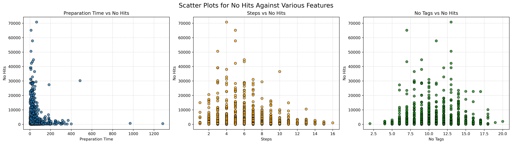
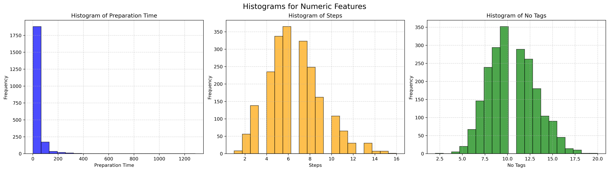
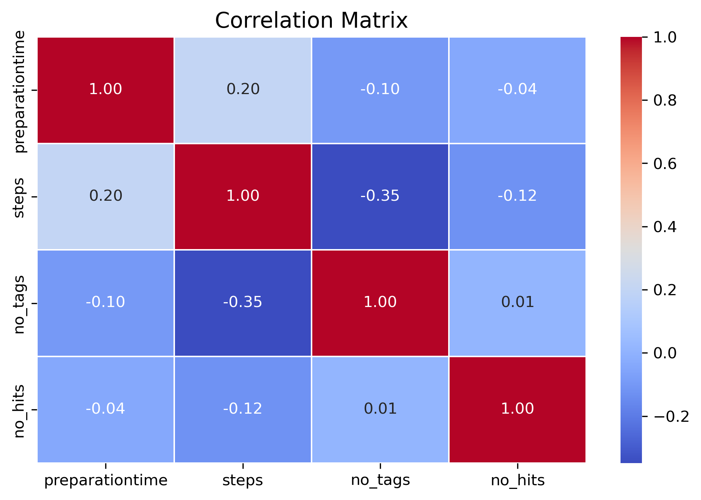
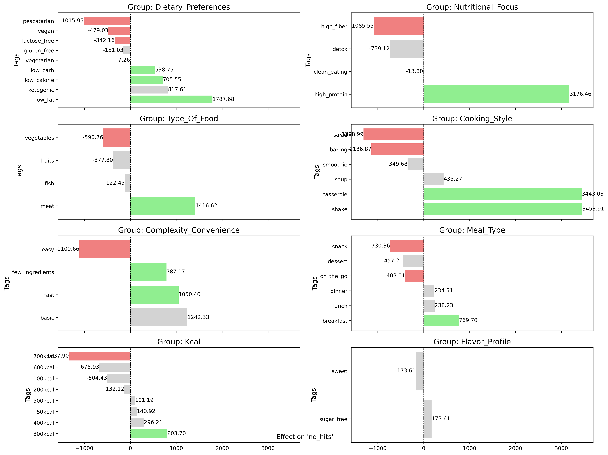

Task Two - Recipe Data
Introduction
One of the main parts of our app is the recipe tab that allows users with a subscription to view numerous recipes provided by the recipe team. Users can search for recipes, view preparation details and save recipes as favorites. The recipe team wonders whether there are features that distinguish successful recipes from less successful recipes and asks for your help. You are provided with an aggregated data set containing data on the recipes viewed by the users. Some of the fields contain text, for example recipe title, description, instructions, etc. related to the recipe.
Key Insights and Recommendations
Tag Analysis
Keywords balance (recipes volume vs view average)
There are some tags with high average and low volume:
shake, smoothie, soup, casserole, ketogenic, 50kcal, basic, high_protein, fish
On the other hand, there are tags with low average and high volume:
vegetarian, vegan, lactose_free, gluten_free, easy, sugar_free
Please check the "Tree Chart" to know more.
Recommendation
Try to create new recipes exploring more the first group. The second group is more saturated and chances are they will bring less views.
Check the recipes from the first group to understand their success and inspire the creation of new recipes.
Tags effect with Statistical Significance Analysis
There are tags that can affect (positively or negatively) the average of views of a recipe with statistical signficance. Please go to the section ANOVA to see the data.
Tags with positive impact:
low_carb,low_calorie, low_fat,high_protein,meat,
casserole, shake, few_ingredients, fast, breakfast, 300kcal
Tags with negative impact:
pescatarian, vegan, lactose_free, high_fiber, vegetables,
salad, baking,easy, snack, on_the_go, 700kcal.
note: the difficulty level doesn't affect the views average.
Recommendation
Even though this result has statistic significance, does not mean that the negative tags are absolutely forbidden and we can only create recipes using the positive tags.
We should see it as a reflection of the users interest.
The users may prefer:
-
low_fat,low_calorie,low_carbdiets instead ofpescatarian,vegan,lactose_freediets. -
Meatrather thanvegetables -
Casserole,shake, rather thansaladandbakedrecipes. -
Fastrecipes withfew ingredients -
Breakfastinstead of other meal time. Maybe because they already know the basics for the lunch, but they would like to have options for breakfast beyond plain eggs. -
Lowercalories recipes because people are focused on loosing weight.
Numeric Values
- Preparation time: Recipes with longer preparation time have lower views.
- Number of steps:The top 9 recipes in terms of views have from 4 to 6 steps.
- Number of tags:The most viewed recipes have usually from 7 to 13 tags.
- Correlation: the three metrics above are bad predictors for views (low correlation)
Recommendation
- Avoid creating overcomplicated recipes (many steps)
- Recipes linked to few tags are "too simple", aim the sweet spot (4 to 6)
Data Visualization
Numeric Values
ScatterPlots
Below are the scatter plots showing the relationships between No Hits and various features:
- Preparation Time vs No Hits: Shows how preparation time correlates with hits.
- Steps vs No Hits: Highlights the impact of steps on hits.
- No Tags vs No Hits: Examines the role of tags in influencing hits.

- Recipes with longer preparation time have lower views.
- The top 9 recipes in terms of views have from 4 to 6 steps.
- The most viewed recipes have usually from 7 to 13 tags.
Histogram

Correlation
Only weak correlations detected. 
PPScore
No Predictive Power (PPS = 0): Features (preparationtime, steps, no_tags) show no predictive relationship with no_hits.
The Decision Tree Regressor performs no better than a baseline (mean prediction).
Model Performance: Baseline and model errors are similar, indicating that these features do not explain variance in no_hits.
Business Implications:
Current features do not effectively predict no_hits.
The analysis suggests either insufficient feature relevance or weak data patterns.
Categorical Values
The tags are grouped by similarity to help in the further analysis.
| Group | Tags |
|---|---|
| Dietary Preferences | vegetarian, vegan, pescatarian, lactose_free, gluten_free, low_carb, ketogenic, low_fat, low_calorie |
| Meal Type | lunch, dinner, breakfast, snack, on_the_go, dessert |
| Calories (kcal) | 50kcal, 100kcal, 200kcal, 300kcal, 400kcal, 500kcal, 600kcal, 700kcal |
| Type of Food | fruits, vegetables, meat, fish |
| Cooking Style | baking, salad, soup, casserole, smoothie, shake |
| Nutritional Focus | high_protein, high_fiber, detox, clean_eating |
| Flavor Profile | sweet, sugar_free |
| Occasions | christmas |
| Complexity/Convenience | easy, basic, fast, few_ingredients |
Tree Chart - Keywords balance
The size is the average views, the color is the number of recipes for each tag:
(you can interact with the chart clicking with the mouse)
-
There are some tags with high average and low volume, we could create more recipes using them:
- Shake, smoothie, soup, casserole, ketogenic, 50kcal, basic, high_protein, fish
-
On the other hand, there are tags with high volume and low average, which we should avoid using for new recipes:
- vegetarian, vegan, lactose_free, gluten_free, easy, sugar_free
Boxplot
Please check the jupyter notebook.
ANOVA for groups
I applied ANOVA for each tag against the group to verify if there is an effect on views average and if the result is statistically significant.
The number represents the effect on the views average:
avg views for recipes with the tag-avg views for the other recipes in the same group
Legend:
-
Green: positive impact with statistic significance.
-
Red: negative impact with statistic significance.
-
Grey: No statistic significance.

Styled Groups Table
Below is the styled DataFrame showing aggregated statistics for no_hits (views):